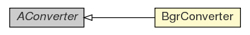

com.xuggle.xuggler.video
Class BgrConverter

java.lang.Object
 com.xuggle.xuggler.video.AConverter
com.xuggle.xuggler.video.BgrConverter
com.xuggle.xuggler.video.AConverter
com.xuggle.xuggler.video.BgrConverter
- All Implemented Interfaces:
- IConverter
public class BgrConverter
- extends AConverter
A converter to translate IVideoPictures to and from
BufferedImages of type BufferedImage.TYPE_3BYTE_BGR.
BgrConverter
public BgrConverter(IPixelFormat.Type pictureType,
int pictureWidth,
int pictureHeight,
int imageWidth,
int imageHeight)
- Construct as converter to translate
IVideoPictures to and
from BufferedImages of type BufferedImage.TYPE_3BYTE_BGR.
- Parameters:
pictureType - the picture type recognized by this converterpictureWidth - the width of picturespictureHeight - the height of picturesimageWidth - the width of imagesimageHeight - the height of images
toPicture
public IVideoPicture toPicture(BufferedImage image,
long timestamp)
- Converts a
BufferedImage to an IVideoPicture.
- Parameters:
image - the source buffered image.timestamp - the time stamp which should be attached to the the
video picture (in microseconds).
toImage
public BufferedImage toImage(IVideoPicture picture)
- Converts an
IVideoPicture to a BufferedImage.
- Parameters:
picture - the source video picture.
delete
public void delete()
- Description copied from interface:
IConverter
- Release any resources used by this converter. Calls to
the converter after this call are illegal and may fail
in unspecified ways.
Copyright © 2008, 2010 Xuggle